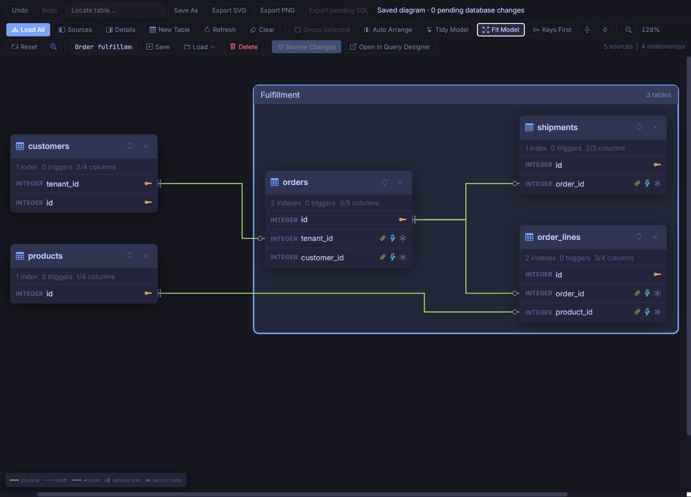
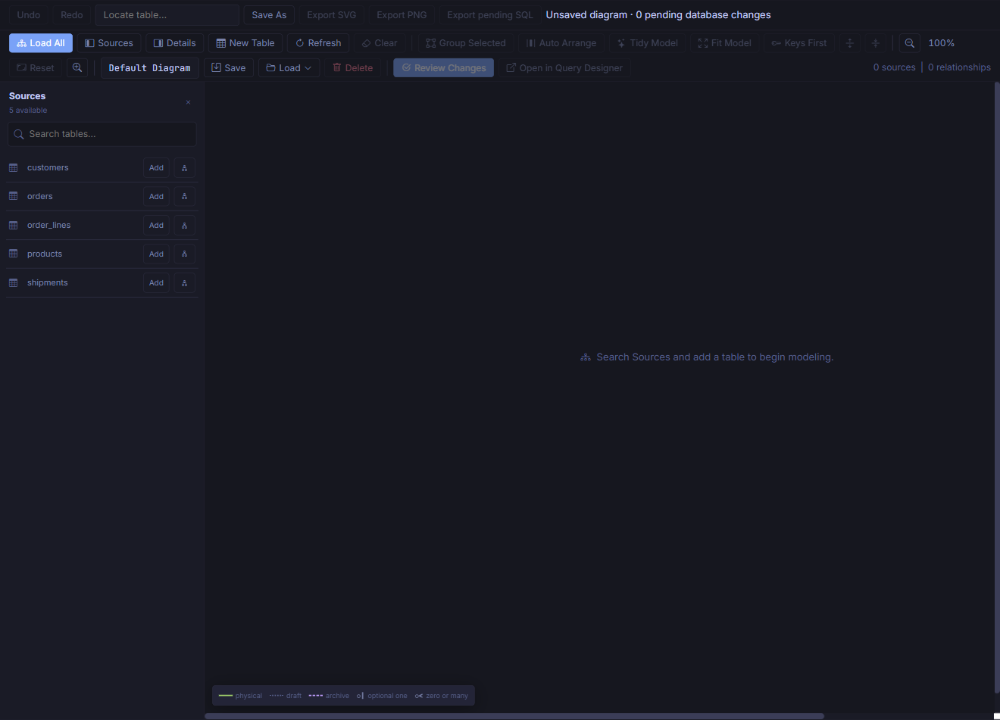
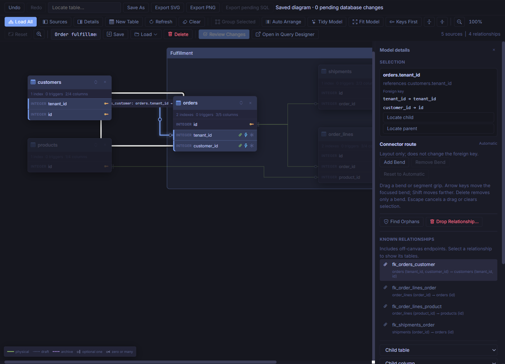
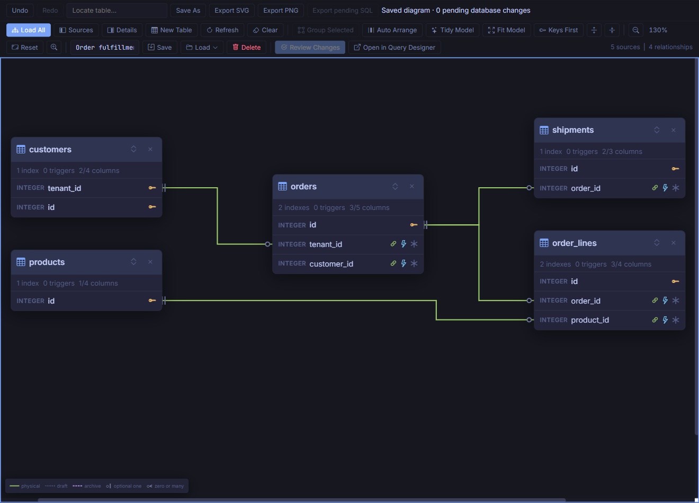
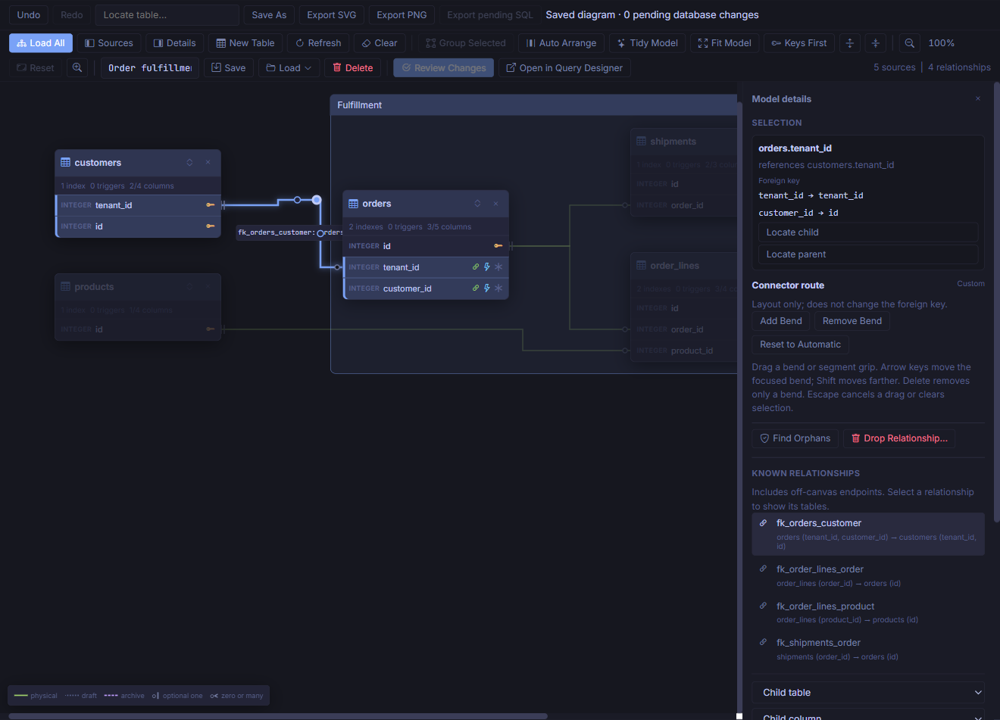
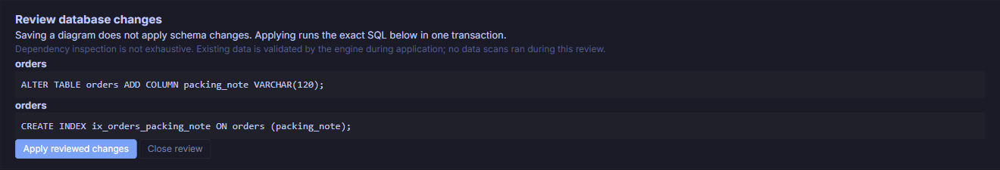

Build a Readable Data Model
Turn five related tables into a diagram you can explain, organize, and reopen. Then use the same workspace to stage a small schema change and review exactly what will run.
CSharpDB's Data Modeler is a practical visual workspace for its embedded schema features, not a separate conceptual modeling language. This tutorial uses real Admin screenshots captured from the accompanying demo. Select any image to open it at full size.
{kind=link}

Before you start
You need a checkout of the CSharpDB repository, its required .NET SDK, and a browser. These screenshots use the current Admin source implementation; an older installed release may have fewer controls. For basic navigation, see the Admin UI guide.
| Diagram work | Database work |
|---|---|
| Add cards, move tables, group, or adjust bends | Stage a table, column, constraint, or index operation |
| Save stores appearance and pending intent | Apply reviewed changes executes the reviewed schema SQL |
| Remove from canvas / Ungroup / Delete diagram | Stage Drop Table or Drop Relationship, then review and apply |
Saving a diagram does not apply its pending SQL. Likewise, removing a card or group does not drop a table.
1. Create the demo database
From the repository root, start a separate Admin instance with a new database path. This PowerShell example generates a fresh folder, so it cannot overwrite an existing tutorial database:
$demoFolder = Join-Path ([IO.Path]::GetTempPath()) ("csharpdb-modeler-" + [guid]::NewGuid().ToString("N"))
New-Item -ItemType Directory -Path $demoFolder | Out-Null
$demoDb = Join-Path $demoFolder "modeler-tutorial.db"
dotnet run --project .\src\CSharpDB.Admin\CSharpDB.Admin.csproj --no-launch-profile -- `
--urls http://127.0.0.1:62821 `
--CSharpDB:Transport=direct `
--CSharpDB:Endpoint="$demoDb"Open http://127.0.0.1:62821/ and confirm that the header says modeler-tutorial.db. If that port is occupied, choose another unused port. Keep this instance separate from any Admin window connected to your normal database.
- Open the demo setup SQL, also available in the repository at
www/docs/tutorials/data-modeler.sql. - Choose New Query, paste the script, and choose Run. Run it once in this new database.
- Confirm the five user tables below appear. If Object Explorer has not refreshed yet, use its refresh button.
| Table | Role in this example |
|---|---|
customers | Composite primary key: tenant_id + id. |
orders | References customers through tenant_id + customer_id. |
products | Product catalog with a unique SKU. |
order_lines | References both orders and products. |
shipments | References orders. |
Checkpoint: the setup reports nine inserted rows. There are five user tables and four foreign-key constraints.
2. Choose what belongs on the canvas
- In Object Explorer, choose Tools → Data Model.
- The new global workspace starts empty because this database has no saved Default Diagram. Open Sources if the pane is closed.
- Find
orders. Choose its relationship icon, labeled Add orders with related tables, rather than the plain Add button. - This adds orders plus its immediate neighbors: customers, order_lines, and shipments. It does not recursively add products.
- Find
productsin Sources and choose Add. Close Sources to expose more canvas.
{kind=link}

Load All is useful for an overview, but a smaller model is usually easier to discuss. Adding sources merges missing tables without moving existing cards. A table's Show in Data Model context action also starts with its direct relationships.
Checkpoint: all five cards are visible and all four relationships have both endpoints on the canvas.
3. Read the relationship, not just the line
Select the connector between customers and orders. If it is hard to target, select orders, open Details, and choose fk_orders_customer under Known relationships.
The relationship name appears beside the line, clear of the table cards and connector. Hover or keyboard-focus the line or its label for the full, wrapped mappings. If there is no clear space for the popup, use Details. Labels reposition automatically without altering saved table positions or connector bends.
The inspector shows two ordered mappings:
orders.tenant_id → customers.tenant_id
orders.customer_id → customers.idThis is one composite foreign-key constraint, so it has one connector. Selecting it highlights all four participating columns. The fact that customers.id belongs to a composite primary key does not mean it is individually unique.
{kind=link}

Read the crow's-foot markers at each end:
- Exactly one (two bars): every order in this example must reference a customer because both child FK columns are required.
- Zero or many (circle and crow's foot): a customer can have no orders or several.
- Zero or one (circle and bar): shown at the parent end for a nullable child FK, or at the child end when the entire FK column set has a matching unique constraint or unique index.
Solid lines are physical FKs, dotted lines are drafts, and dashed lines are archive relationships. External tables and archive relationships are read-only schema context, though their cards and routes can still be arranged.
4. Make the canvas readable
- Click empty canvas or press Escape with the canvas focused to clear selection. Unrelated tables stop dimming.
- Choose Keys First to show primary keys, foreign keys, and relationship endpoints. Expand an individual card when you need its other columns.
- Choose Auto Arrange, then Fit Model. Parents generally appear left of children; independent components are separated.
- Drag a table's header to fine-tune its position. Avoid the header's detail and remove buttons.
{kind=link}

Drag empty background to pan; use the wheel to zoom around your pointer. Locate table… finds an existing canvas card. Show Direct Relationships adds a selected table's immediate neighbors.
Auto Arrange explicitly reflows the visible model. Tidy Model additionally resets custom routes, switches to Keys First, and fits the result; it confirms before discarding custom routes. Do not use Tidy when you intend to keep hand-adjusted bends.
5. Enclose the fulfillment tables
- Ctrl-click on Windows, Cmd-click on macOS, or Shift-click to select
orders,order_lines, andshipments. - Choose Group Selected. The frame appears without rearranging the tables.
- In Details, enter Fulfillment under Group name, choose Rename Group, and keep the blue color or select another palette color.
- Drag the group title to move the three tables together. Drag one table header to move only that member; the frame fits the members automatically.
Dragging across a border does not change membership. Use Add/Move Selected Tables Here or Remove from Group explicitly. A table belongs to at most one group; a singleton group is retained, and an empty one is removed.
Ungroup removes only the frame. Auto Arrange treats the group as one block, preserving its internal arrangement. Groups are organizational metadata, not schemas, transactions, or access-control boundaries.
6. Give a connector a deliberate bend
- Select
fk_orders_customeragain. Open Details → Connector route. - Choose Add Bend. A new guide is focused on the longest segment.
- Move it with the arrow keys. Each press moves 8 canvas units; Shift+Arrow moves 24. The example uses Shift+Up to move the guide above its original position.
- Drag a bend handle to move one guide, or drag an interior segment grip to slide the whole straight section without splitting it. Vertical sections slide left/right; horizontal sections slide up/down. Movement stops at the limits of the clear lane, while endpoint sections remain attached to their columns.
- After sliding the middle vertical section, move either table: the section keeps its horizontal lane while its ends follow the column rows. The lane stays outside a table moved toward it; other obstructions may require automatic routing.
- Use Add Bend, Enter on a segment grip, or double-click when you want another guide or detour. Adding or moving individual bends makes those guides fixed canvas positions instead. The lane and its behavior are saved with the diagram; Escape cancels a move in progress.
{kind=link}

Escape cancels an active move. Delete or Backspace on a focused bend removes only that bend, not the FK. Reset to Automatic discards custom guides.
Moving a group translates bends for relationships entirely inside that group. Bends that cross its boundary stay fixed while endpoint legs follow the moved cards. If a card obstructs a saved bend, the modeler temporarily uses automatic routing and retains the saved guide.
7. Save a diagram you can come back to
- Choose Save As in the diagram toolbar. In the naming panel, enter Order fulfillment and choose Save Copy. The new name must not already exist.
- Wait for Saved diagram. Named diagrams also save completed moves and layout edits automatically; pan and zoom saving is briefly debounced.
- Close the Data Model tab, open it again from Tools, then select Order fulfillment in the Diagram selector at the top. The global entry initially opens Default Diagram, so select your named copy explicitly.
- Confirm the five tables, Fulfillment group, table positions, and custom bend are restored. Select the connector to see that its route is still Custom.
Diagram JSON stores membership, positions, groups, detail levels, connector guides and attachment sides, viewport, and pending schema intent. Storage is local to the database and active route. Inspect it through System Catalog → sys.diagrams; do not edit the __data_model_diagrams backing table directly.
Keep several focused diagrams
- New Diagram opens a naming panel. Enter a unique name and choose Create Diagram for a separate, empty canvas with no pending database changes. Your existing diagram stays saved.
- Save As creates and activates a copy of the current diagram, including pending schema edits. Use the Diagram selector to switch between your saved views.
- Delete Diagram asks you to confirm the active name. It deletes only that saved record, not database tables. The canvas and pending changes remain open but unsaved; editing it does not recreate the deleted record. Use Save As to keep it again.
- Clear empties and saves the active canvas while retaining pending schema changes. Use New Diagram for a fresh workspace, or Save As before Clear to preserve the original layout.
If the current canvas is unnamed or cannot be saved, save it successfully before creating or opening another diagram. Cancel or Escape closes a naming or deletion panel without changing anything.
Undo / Redo covers diagram edits and unapplied schema changes, with each completed drag treated as one action. History is session-local and resets after load, refresh, or successful Apply. It cannot undo committed database changes.
Checkpoint: closing and loading the named diagram restores the arrangement, without rebuilding it through Auto Arrange.
8. Stage a small schema change
Now work only in the disposable database. Add a packing note to orders, then index the new column to demonstrate dependent staging. This index is an exercise, not a recommendation to index every text field.
- Select only orders and open Details → Stage schema change.
- Choose Add Column. Enter
packing_note, set Declared SQL type toVARCHAR(120), leave Not null unchecked, and choose Stage change. - Choose Create Index. In Child/key/index columns, add
packing_note. Enterix_orders_packing_note, leave Unique index unchecked, and stage it. - Confirm the toolbar reports 2 pending database changes. The inspector previews both operations in order; the live table has not changed.
Later operations use the current preview names and definitions. If you rename a staged column, use its new name in subsequent edits. Stage a candidate primary/unique key before an FK that references it.
The inspector also supports engine-supported table and column changes, keys, checks, foreign keys, and indexes. Composite pickers preserve column order. Unsupported combinations are blocked rather than simulated through a table rebuild. Engine-maintained supporting indexes are changed through their owning constraints, not independently.
9. Review the exact SQL, then apply
- Choose Review Changes. Inspect each affected table, statement, warning, and destructive-change label.
- For this example, the plan adds the column first and creates the index second. Confirm the statements below match the review.
- Choose Apply reviewed changes only when ready. Confirm success and that the pending count returns to zero.
- Select orders again. Check Columns and declared properties for
packing_note, and Keys, checks, and indexes forix_orders_packing_note.
ALTER TABLE orders ADD COLUMN packing_note VARCHAR(120);
CREATE INDEX ix_orders_packing_note ON orders (packing_note);{kind=link}

For constraint work, Check existing data can explicitly check relevant NULLs, duplicates, and orphans, including related tables outside the canvas. These checks are cancellable and may scan substantial data; they do not run just because a diagram opens. Skipped checks are not passes, and the engine validates constraints again during Apply.
Clients without the required transaction support cannot apply through this workflow. Known view and trigger dependencies are helpful but are not an exhaustive guarantee that no other consumers are affected.
10. Export and hand off your work
Use Export SVG for a scalable diagram, or Export PNG for a raster image. These actions do not move tables or execute SQL. Large PNG exports are scaled down.
Before applying, Export pending SQL exports the reviewed transaction script without executing it. After successful Apply there is no pending batch left to export. An exported file does not perform a live schema-drift check if you later execute it elsewhere.
Use contextual actions to open table data, Query Designer, Data Hygiene, System Catalog, or Compare / Deploy for the next task. Views, collections, procedures, and pipelines stay in their own tools rather than becoming canvas nodes.
Troubleshooting
| What you see | What to do |
|---|---|
| Most cards are dimmed | Clear selection with an empty-canvas click or Escape while the canvas has focus. |
| A table will not move | Drag its header, not a column, connector, or header button. The group title moves the whole group. |
| A connector is missing | Both endpoint cards must be present. Use Known relationships to add missing endpoints, and read metadata warnings. |
| The layout looks different after reopening | Check the database, route, and loaded diagram name. Default Diagram and Order fulfillment are separate saved records. |
| A saved bend is not followed | Check for an obstructing table. Move it away, adjust the guide, or Reset to Automatic. |
| The new column is not on the card after Apply | Keys First hides non-key columns. Expand the card or inspect its full column list in Details. |
| Schema controls are missing | Select one writable table, not a group, several tables, or an external table. |
| Saved diagram, unchanged database | This is expected until you review and apply the pending schema operations. |
What you built
You created a focused schema view, understood a composite FK, organized a named group, adjusted a connector, reopened its saved layout, and applied a reviewed two-operation change. You can repeat the visual steps on a small part of your own schema without applying any database changes.
For the complete control reference, open Help → Data Modeler inside Admin's bundled offline help. To stop the tutorial instance, return to its terminal and press Ctrl+C. Keep its database if you want to revisit the diagram.